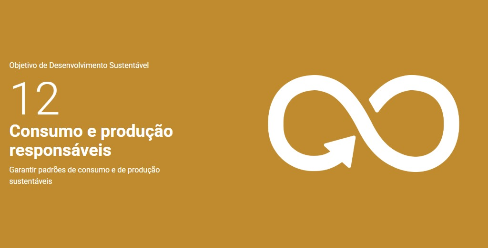

Achados e perdidos
Bem vindo ao achados e perdidos da Etec de Francisco Morato!
Achados & Perdidos
Bem vindo ao achados e perdidos da Etec de Francisco Morato!
Este site foi criado com base no consumo e produção responsáveis, com base na
ODS 12
com o intuito de facilitar a busca
por itens que foram perdidos por alunos
na escola, deixando-os ver os itens perdidos.
